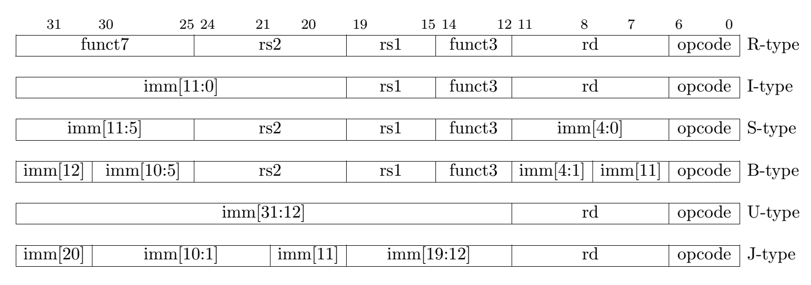
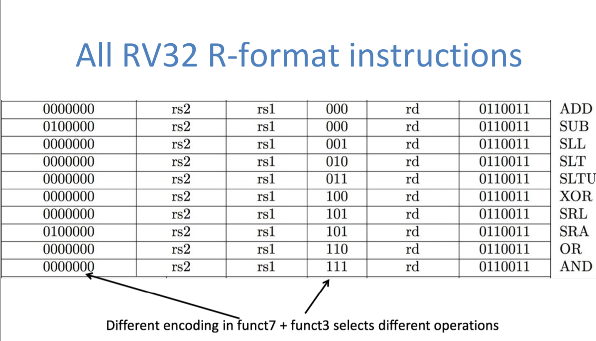
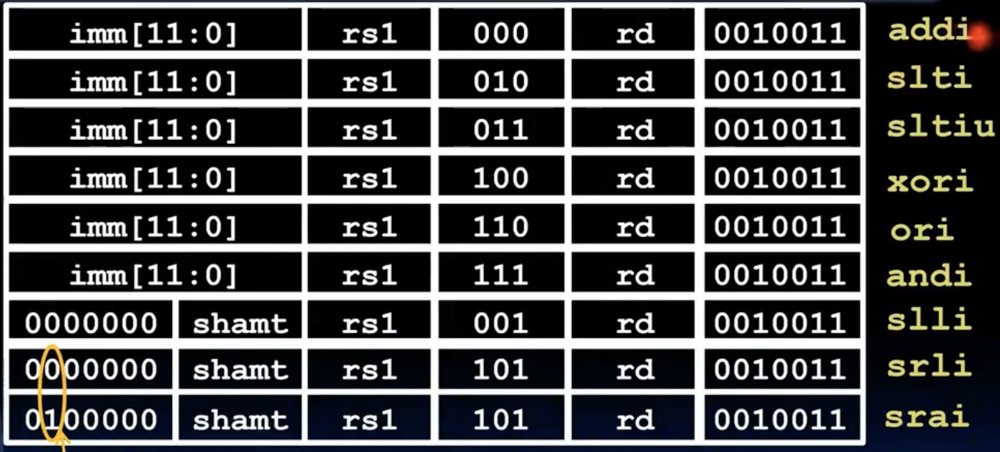
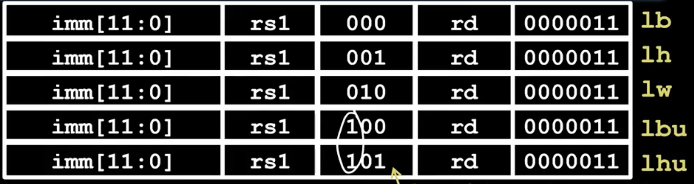
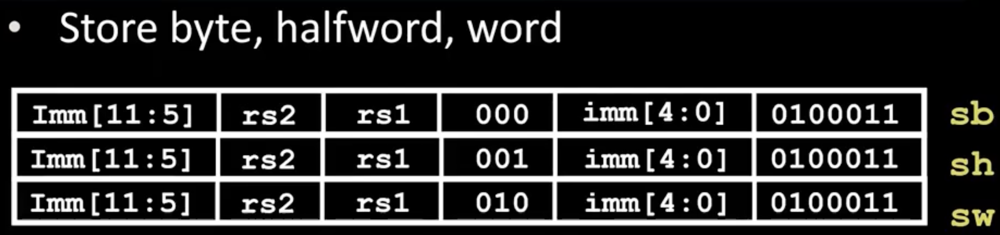
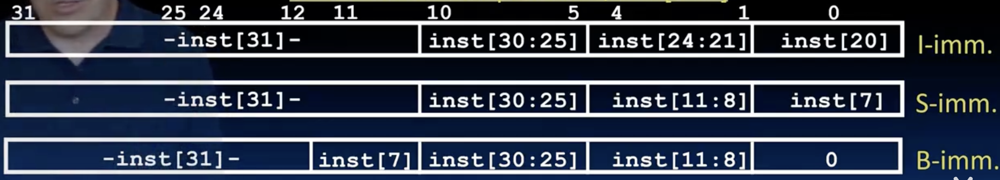
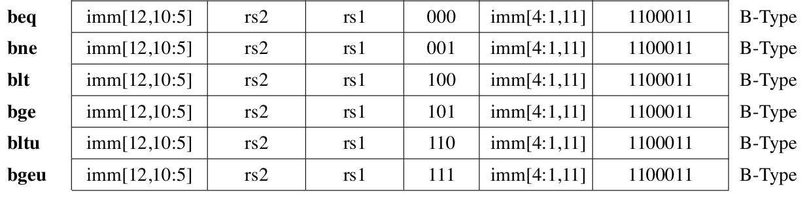

the history of Computers
- first computer is ENIAC,built in 1946,mainly used for calculating triangle.
- army computer to programmer,mostly are women.
- von Neumann architecture: stored program computer.
- the first stored program computer is EDVAC,built in 1949,剑桥。
- Consequence: Everything has a memeory address.Every instruction and data must be stored in memory, and we can get them by their address because all things can be represented by binary numbers.
- 要知道一开始的程序是用电线的插入来实现的，非常的不方便，现在有了存储二进制指令的计算机，巨大的进步！
- One register keeps address of instruction to be executed next,called Program Counter(PC).
- Consequence2: Binary Compatibility,开发者们并不想在更新产品后重新学习一套新的指令集，所以新产品一般都会兼容老产品的指令集，就是所谓的向后兼容(backward compatibility)。比如说IBM在1981年推出的pc采用了intel 8088处理器，这导致现在的最新的pc仍然兼容80x86系列指令集，可以运行从1980到现在的程序。
Instruction as Numbers
- Most instructions are represented as 32-bit numbers in RISC-V ，and that is same in RV32,RV64,RV128.
- and we divide the 32 bits into several fields,each field tells processor something about instruction.如果直接使用32位来表示我们的指令，那么会有2^32种不同的指令，这显然是不现实的，RISC-V直接定义了6种基础的指令格式，包括R-type,I-type,S-type,B-type,U-type和J-type，每种格式都有自己特定的字段划分方式。
Instruction Formats

R-type reg-reg operations
- rs1(source register 1): specifies register containing first operand.
- rs2: specifies register containing second operand.
- rd(Desination register): specifies register which will receive result of computation.
- each register field holds a 5-bit number,刚好32个寄存器。
- func3和func7与opcode一起指定具体的操作，但是问题来了，func3+func7一共是10位，我们有1024个操作吗，显然没有啊，那么要这么多的冗余干什么呢？有一些选择如何编码指令的方式，让processor更容易找到正确的指令。还有就是为什么func7和func3不是连续的，后面再说🐶
|
|

-
补充一下slt指令，slt rd,rs1,rs2, 如果rs1<rs2,则rd=1，否则rd=0。 # set less than
-
sltu与slt类似，但是是无符号数比较。
-
第30位只有sub和sra是1，其他的都是0，我的理解是前者用于和加法的区分，后者用于提前知道要进行符号扩展。
I-type immediate operations
|
|

- slti和sltiu与slt和sltu类似，只不过是将rs2替换成了imm。 set less than immediate
- 由于我们使用的是RV32，所以移位最大就是32，再多也没有意义了，所以shamt只需要5位就够了，然后剩下的7位可以用于别的地方，比如和之前类似设置第30位来区分srl和sra。
- 如果需要更大的立即数，后面再说。
Load instructions are also I-type
- 由于I-type是针对算术指令设计的，所以load指令单独用一个opcode来表示,其余的变化就是把imm作为地址偏移量(offset)来使用。
|
|

- lh表示加载半个word（16位），lb表示加载一个byte（8位），lbu表示加载一个无符号的byte，lbh表示加载一个无符号的halfword，注意到二者特别使用了一个位来区分符号扩展和零扩展。而lb和lh则是需要进行符号扩展的。
S-type store operations
- 注意到imm（offset）被拆分成了两部分，imm[11:5]和imm[4:0]分别放在了不同的位置，原来的R-type中的rd位置用来放置imm[4:0], 而func7位置用来放置imm[11:5],rs2位置用来放置源寄存器(存储数据的)，而rs1位置用来放置基地址寄存器base。
|
|

B-type branch operations
- imm is the offset to be addded to PC for branch target address.
- Shall we use byte as the unit of offset? No, absolutely not, 因为指令都是32位对齐的，如果使用字节作为单位，有可能跑到指令的中间位置导致发生一些奇怪的事情。所以我们使用32位作为unit,这样不仅可以保证对齐，而且可以增加分支的范围。
|
|
然而在真实的risc-v指令中我们并不是这样处理的，因为压缩指令的存在（16位指令），为什么存在16位的指令呢，因为在有些代码中，空间真的很重要，通常用于非常便宜的消费设备(flash,memory keys)。所以相应的步长也就不是4了，而是2，保证16位对齐。
|
|
-
这才是真实的risc-v分支指令的工作方式，其实不管是4还是2，我们都不存储这个步长在imm中，而是直接存储其他的位，默认就是2🐶
-
在举一个例子之前我们先看看imm的奇怪的位置
-
如果你忘了imm的位是怎么分布的，点这里Instruction Formats,可以发现imm的位置大致上没啥变化，只是被拆分成了几部分放在了不同的位置，而且顺序也被打乱了。

- 这个图表明B-type确实没有存储imm[0],之前也说了由于16位对齐所以一定是2的倍数，所以imm[0]一定是0，不需要存储，所以节省了一个inst的imm位用来引入12位，将原来的11位放到inst[7],12位放到inst[31]，其余和S-type类似。
|
|

question on PC-addressing and U-type instructions
- 代码在内存中可能发生移动，但是由于我们使用的是相对地址，所以不影响正确性。
- 由于我们相当于使用了13位的分支偏移量，那就是-1024到1023个指令（32位），如果跳转范围超过了怎么办呢？
- 我们使用u-type指令来加载一个20位的立即数到寄存器中，补充两个指令：
|
|
- 只保留了func3和opcode,剩下的20位全部用来存储imm20。
J-type instructions
- 和branch类似，jal保证了16位对齐，所以imm[0]不存储，实际使用了[0:20]一共21位的偏移量。
- 2^21 / 2 / 4 = 2^18,所以是-2^18到2^18-1个指令（32位）。
- 它的opcode是1101111,func3被省略掉了，剩下的20位用来存储imm。
|
|
- 还有一个披着羊皮的狼：jalr rd,rs,imm，看起来是跳转指令，但是使用的其实是I-type格式。如果忘了，点这里Instruction Formats
|
|
总结
我们用指令排版的难以理解，换来了寄存器和立即数位置的对齐，使得硬件解码更加方便，这是值得的。